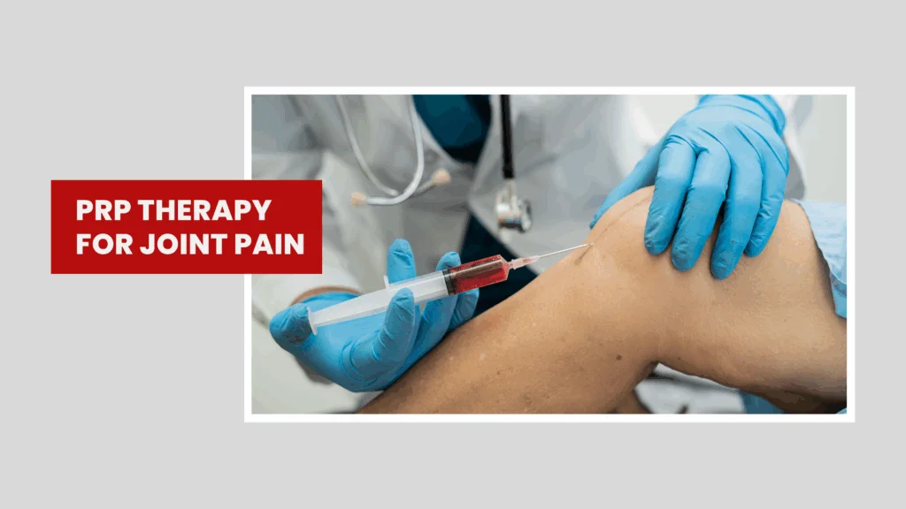

PRP Therapy for Joint Pain: Does It Really Work?
Joint pain can creep into everyday life, first as a nuisance, then as a barrier to the things you love. Between painkillers, physiotherapy, injections, and surgery, there's a wide menu of options. Over the last decade, platelet-rich plasma (PRP) has stepped into that menu as a "repair-focused" approach.
A small sample of your own blood is spun to concentrate platelets (which carry growth factors), and that concentrate is injected into a painful joint. The promise is simple: push the body's own healing responses and calm inflammation. But does it actually help?
The short answer: for some types of joint pain, especially knee osteoarthritis (OA), PRP can reduce pain and improve function for many people, although results vary and guidelines remain mixed. Evidence for other joints and tendon-related pain is more uneven, and the treatment is not a magic bullet.
What is PRP and What Happens During Treatment?
PRP is made from your own blood. A clinician draws a small sample, spins it in a centrifuge to concentrate platelets, and injects the resulting plasma into the target joint (often under ultrasound guidance). Platelets carry proteins and signaling molecules (growth factors and cytokines) that can modulate inflammation and influence tissue repair when delivered to an injured or irritated area.
Does PRP Work for Knee Osteoarthritis?
Often, yes. Many trials and meta-analyses show meaningful pain relief and functional gains for up to 6–12 months in knee OA. Recent high-quality reviews comparing PRP with placebo or other injections report improvements in pain scores and daily function after PRP, sometimes with durability to one year. Some analyses even suggest that higher platelet concentrations in the injectate correlate with better symptom relief.
For mild-to-moderate knee OA, contemporary evidence supports PRP as a symptom-relief option for some patients, but guideline positions and real-world responses vary.
Is PRP Better than Steroid or Hyaluronic Acid Shots?
Compared with corticosteroid injections: PRP tends to lag in early pain relief (steroids are fast) but may outperform in the mid-term, with more durable benefits at a few months, especially in tendinopathy and some joint conditions.
Compared with hyaluronic acid (HA), results differ by study. Several recent meta-analyses in knee OA report PRP outperforms HA on pain and function, while others find no clear superiority or only small differences. Combining PRP with HA may offer incremental benefit in some analyses, but protocols vary and this remains debated.
Benefits of PRP Therapy
PRP therapy offers several benefits:
- Knee OA (mild–moderate): Most consistent signal of benefit (pain/function up to ~12 months). Effect size and durability can depend on how PRP is prepared and how many injections are given.
- Hip OA: Evidence is growing but mixed; some analyses suggest pain reduction without clear advantage over HA.
- Tendinopathy (e.g., tennis elbow, rotator cuff, patellar): Mid-term outcomes may be superior to steroids for some chronic tendinopathies; responses vary by tendon and protocol.
Not all PRP is the same. Key variables include platelet concentration, leukocyte content (white blood cells), activation method, volume, and number/timing of injections. Two practical points from recent syntheses:
- Leukocyte-poor PRP (LP-PRP) may yield better pain outcomes and fewer post-injection flares than leukocyte-rich PRP in knee OA and some shoulder procedures.
- Multiple doses beat a single shot for knee OA in many studies; three injections spaced a few weeks apart is a common protocol with favorable outcomes in meta-analyses.
Safety and Other Considerations
Because PRP uses your own blood, allergic reactions are rare. The common experiences are temporary soreness, swelling, or stiffness at the injection site. That said, systematic reviews document uncommon complications, notably infection, nerve irritation, and post-injection inflammatory flares. Proper sterile technique and clinician expertise are essential.
Who is a Good Candidate for PRP Therapy for Joint Pain?
People with mild-to-moderate knee OA who have persistent pain despite first-line care (exercise therapy, weight management as relevant, topical/oral analgesics) are often considered.
Evidence hints that earlier disease responds better than advanced, bone-on-bone arthritis. Strong foundational care activity, strength training, weight management remains cornerstone therapy in all guidelines and improves outcomes whether or not you add injections.
PRP Treatment Plan for Joint Pain
Although protocols vary, many clinicians offer 2–3 injections spaced 2–4 weeks apart for knee OA, using ultrasound guidance to confirm accurate placement. Activity is usually reduced for a couple of days; heavy loading is often avoided briefly, then rehab is resumed. There is no universally accepted "post-PRP" protocol, your clinician will tailor advice to your joint and sport/work demands.
FAQs
Is PRP better than a steroid shot if I just want fast relief?
Steroids act faster but PRP tends to last longer. Steroids can calm a flare within days but often fade in weeks. PRP's peak benefit often lands later (weeks to a few months) and may persist longer for some people.
How many PRP sessions do people usually need?
Many protocols use three injections a few weeks apart, especially for knee OA, and studies suggest multiple doses beat a single shot. Your plan should be individualized.
I'm 30 with early knee pain, could PRP help me?
Possibly, especially if you have early OA or persistent overuse-related pain unresponsive to rehab. Outcomes are generally better in mild-to-moderate disease than in advanced arthritis. Start with a thorough evaluation and a structured exercise program; consider PRP if progress stalls.
Will PRP regrow cartilage?
Most studies track symptom and function improvements; consistent structural regeneration on imaging hasn't been demonstrated.
Is PRP safe if I have diabetes or take blood thinners?
PRP is autologous and generally well-tolerated, but bleeding risk and infection mitigation need careful planning. Your clinician will weigh medications, comorbidities, and local protocols; do not stop anticoagulants without medical guidance.
What should I do after the PRP injection?
Expect short-term soreness; avoid heavy loading briefly; then ease back into guided rehab. There's no single gold-standard aftercare protocol and follow your clinician's plan.
Conclusion
PRP isn't hype or cure-all but it's a reasonable, biologically plausible option that can reduce pain and improve function for many people with knee OA, especially when used alongside high-value care such as exercise therapy. Outcomes depend heavily on patient selection and protocol details (how PRP is made, how much is injected, and how often).
For other joints and for tendon conditions, results vary; in some (like Achilles tendinopathy), evidence doesn't support routine use. Because guidelines and coverage policies are still evolving, the smartest next step is a shared decision-making conversation with a qualified clinician.
Confirm the diagnosis, optimize non-injection care, scrutinize the PRP protocol being offered, and weigh potential benefit against cost and alternatives. Done thoughtfully, PRP can be one more tool to help you move with less pain.